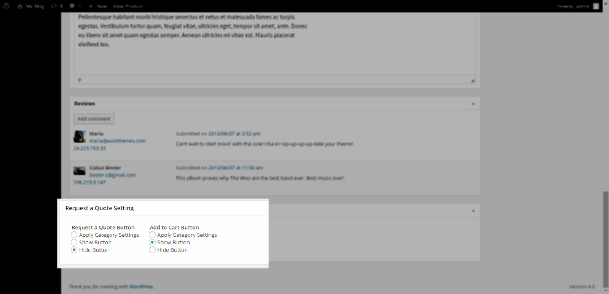
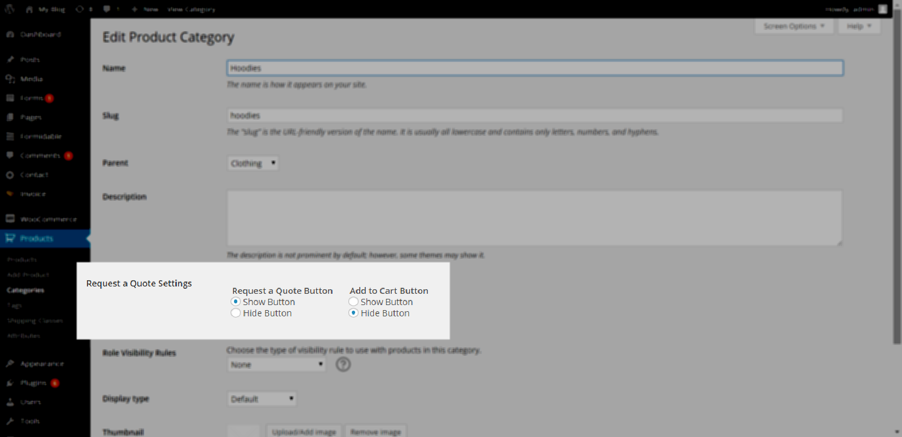
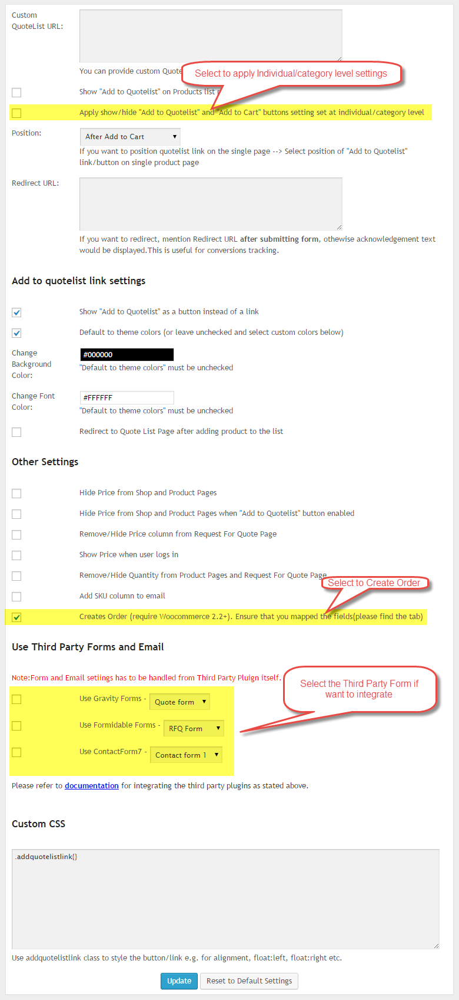
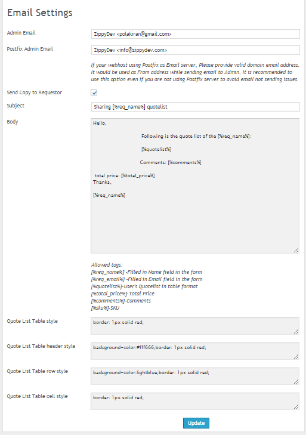
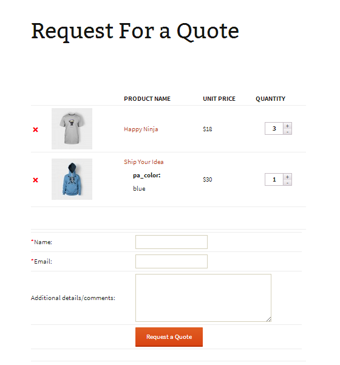

Settings is the place where you can change the properties, show/hide or position of Add to Quotelist Button/link, Add To Cart Button/link etc. Detailed description given below:
Show/Hide Buttons
You can have a global setting of show/hide buttons(as explained in Position section below. But you can also control the show/hide Quote and Cart buttons at Individual/Category level.
Please see the screenshot below:

Individual Product Page

Product Category Page
Position
You can choose position of "Add To Quote list" Button/link to be placed in Single Product Page. Plugin has 3 different places where you can choose the suitable option.
You can choose "Use Shortcode", to say that you are willing to use shortcode([dvin-wcql-shopbutton product_id="17"]), Using this feature you can place the button wherever you want on any page or post.
You can choose "Replace Add to Cart", to replace "Add to Cart" button with "Add to Quote" button in product list and product details page.
Change Look & Feel of "Add To Quote List" Button/link
You can choose to have Button/Link in same as "Add to Cart" Button shows in by the theme. Otherwise it would be default hyperlink. You can choose the Font and Background of the Button/link, otherwise can be default to theme colors.
You can override the CSS rules of "Add To Quote List" Button to align the button/link as per the theme.
You can attach the Gravity Form/Formidable PRO/Contact Form 7 to the "Request a Quote" Plugin.
Important things are highlighted below in secreenshot

You can create widget for this quotelist by choosing the "Text Widget" in the Widgets. Then add the following code in that:
<div id="quotelist-widget"></div>
Note:Applicable only if not using Gravity Forms or any third party pluign for customization of form and Email configuration.
You customize the email message and look & feel(provided fields to input the styles for the table of the products) of it what should be included in the email intended to send to administartor to request for the quote.

You can also send the email copy to customer/requestor by selecting the appropriate checkbox in the Email settings page.
Request For a Quote page by default contains the shortcodes to display the respective products and form to post to Administrator. Content in the page is customizable. See below sample:
[dvin-wcql-listing] Submit the below form to request for the Quote: [dvin-wcql-form]See the below screenshot of the Quote List screen(based on above code): 
You can hide Price column in the Quote List Page and Email message by selecting checkbox of "Remove/Hide Price column from Request For Quote Page"
You can override the following under dvin-wcql/templates folder in active theme:
***You can do most of the tasks through filters rather than overriding the files.Go to List of Fileters Page
For example: create folder "dvin-wcql/templates" in your theme directory, now create form.php and make necessary modifications like adding or deleting the fields.
now create quotelist.php to customize the listing page.
ADVANTAGE OF THIS METHOD OF CUSTOMIZATION IS THAT YOU DO NOT LOOSE THE CHANGES YOU MADE TO FORM OR QUOTE LISTING PAGE WHEN YOU UPDATE THE PLUGIN.
In
InCountry:
<?php
if($_POST['wcql_country']=='')
$errors[]= __('Please enter country','dvinwcql');
?>
In <?php $needle_arr[]='[%wcql_country%]'; $replace_with_arr[] = $_POST['wcql_country']; ?>
Currently we are supporting Gravity Forms,Formidable PRO and Contact Form 7
Note:Form and Email settings has to be handled from Third Party Pluign itself.
Below steps to be followed for Gravity forms to add form to the Request For Quote Page:
As mentioned earlier, we have [dvin-wcql-listing] is part of the default "Request For Quote" Page content.Please remove it as it is going to get/configured in Gravity Forms.It should be as follows(sample):
Submit the below form to request for the Quote: -- sample text [dvin-wcql-form]
Below steps to be followed for Formidable PRO to add form to the Request For Quote Page:
Below steps to be followed for Contact Form 7 to add form to the Request For Quote Page:
Note:Other Important task is how the entries going to be stored in admin and email configuration NOT covering in this section in an assumption that User already have idea about them and plenty of documentation available on the net.
Thank you for purchasing this item. We'll be glad to help you if you have any questions relating to this item. If you have a more general questions relating to the item of if your question is beyond the scope of this file you might consider visiting my profile page Contact Us form where from you can email me . Email me your Item Purchase Code or License Certificate.